전기공사산업기사 (2010-03-07 기출문제)
1과목: 전기응용
1. 적외선 가열 방식의 장점이 아닌 것은?
- 설치비가 저렴하다.
- 온도 제어가 용이하다.
- 가열 전, 후의 에너지 손실이 많다.
- 보수가 용이하다.
(정답률: 78%)

2. 전기철도에서 궤도(track)의 3요소가 아닌 것은?
- 궤조
- 침목
- 도상
- 구배
(정답률: 67%)
3. 전해 콘덴서의 제조나 재생고무의 제조 등에 주로 응용하는 현상은?
- 전기침투
- 전기영동
- 비산현상
- 핀치효과
(정답률: 60%)
4. 직류 아크 용접에서 용접봉을 용접기의 양(+)극에, 모재를 음(-)극에 연결하는 경우의 극성은?
- 정극성
- 역극성
- 자극성
- 용극성
(정답률: 62%)
5. 피드백 제어 중 물체의 위치, 방위, 자세 등의 기계적 변위를 제어량으로 하는 것은?
- 프로세스 제어
- 자동조정
- 서보기구
- 피드백 제어
(정답률: 75%)
6. 고순도의 금속을 얻기 위하 금속전해에 해당되지 않는 것은?
- 전해정제
- 전해채취
- 용융염전해법
- 전해연마
(정답률: 63%)
7. 복사속의 단위는?
- 스텐라디안[Sr]
- 와트[W]
- 루우멘[Im]
- 캔들[Cd]
(정답률: 61%)
8. 두 도체 또는 반도체의 폐회로에서 두 접합점의 온도의 차로서 전류가 생기는 현상은?
- 홀
- 광전효과
- 펠티어효과
- 제벡 효과
(정답률: 69%)
9. 20[cm2]의 면적에 0.8[lm]의 광속이 조사하고 있다. 이 면의 조도는 몇 [lx]인가?
- 200
- 300
- 400
- 500
(정답률: 63%)
10. 빛을 아래쪽에 확산, 복사시키며 또 눈부심을 적게 하는 조명 기구는?
- 글로브
- 루버
- 반사볼
- 투광기
(정답률: 72%)
11. 조명공학 등에 사용되는 단위변환 중 틀린 것은?
- 1[lx] = 1[lm/m2]
- 1[ph] = 1[lm/cm2]
- 1[ph] = 105[lx]
- 1[rlx] = 1[lm/m2]
(정답률: 71%)
12. 전력용 MOS FET의 특징을 설명한 것으로 잘못된 것은?
- 열적으로 안정하다.
- 직렬접속이 가능하다.
- 구동 전력이 작다.
- 고속 스위칭이 가능하다.
(정답률: 53%)
13. 궤간 1[m]이고 반경이 1270[m]의 곡선궤도를 64[km/h]로 주행하는데 적당한 고도[mm]는 약 얼마인가?
- 13.4
- 15.8
- 18.6
- 25.4
(정답률: 67%)
14. 전동기의 선정 방법에 속하지 않는 것은?
- 부하의 특성 및 속도 특성에 적합한 특성의 것을 선정
- 용도에 적합한 기계적 형식의 것을 선정
- 운전형식에 적당한 정격 및 냉각방식에 따라 선정
- 부하 토크와 상관없는 표준출력의 것을 선정
(정답률: 76%)
15. 500[W]의 전열기로 물 2[kg]을 10[℃]에서 100[℃] 까지 가열하는데 약 몇 분[min]이 걸리겠는가? (단, 전역기의 발생열은 전부 물의 온도로 이용된다고 가정한다.)
- 70
- 60
- 25
- 20
(정답률: 53%)
16. 직류-직류 변환기이고 전기철도의 직권전동기 등 속도제어에서 전기자 전압을 조정하면 속도 제어가 되는 것은?
- 듀얼 컨버터
- 사이클로 컨버터
- 초퍼
- 인버터
(정답률: 82%)
17. 다음 중 토크가 가장 적은 전동기는?
- 반발 기동형
- 콘덴서 기동형
- 분상 기동형
- 반발 유도형
(정답률: 72%)
18. 유도 전동기의 제동 방법 중 슬림을 1~2 사이로 하여 3선중 2선의 접속을 바꾸어 제동하는 방법은?
- 역상 제동
- 와류 제동
- 발전 제동
- 회생 제동
(정답률: 76%)
19. 목재 건조에 적합한 가열방식은?
- 저항가열
- 적외선가열
- 유전가열
- 유도가열
(정답률: 62%)
20. 휘도가 균일한 긴 원통 광원의 축 중앙 수직 방향의 광도가 100[cd]일 때 전광속 [lm]은 약 얼마인가?
- 514 [lm]
- 100 [lm]
- 986 [lm]
- 1256 [lm]
(정답률: 48%)
2과목: 전력공학
21. 저항 10Ω, 리액턴스 15Ω인 3상 송전선이 있다. 수전단 전압 60kV, 부하역률 0.8(늦음), 전류 100A라 한다. 이때 송전단전압은 약 몇 [kV]인가?
- 36[kV]
- 63[kV]
- 109[kV]
- 120[kV]
(정답률: 39%)
22. 그림과 같은 저압배전선이 있다. FA, AB, BC 간의 저항은 각각 0.1Ω, 0.1Ω, 0.2Ω이고, A, B, C점에 전등(역률100%)부하가 각각 5A, 15A, 10A가 걸려 있다. 지금 급전점 F의 전압을 1⑤V라 하면 C점의 전압[V]은? (단, 선로의 리액턴스는 무시한다.)
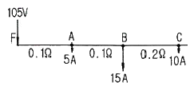
- 102.5[V]
- 100.5[V]
- 97.5[V]
- 95.5[V]
(정답률: 34%)
23. 동일 굵기의 전선으로 된 3상 3선식 2회선 송전선이 있다. A회선의 전류는 100A, B회선의 전류는 50A이고 선로 손실은 합계 50 kW이다. 개폐기를 닫아서 두 회선을 병렬로 사용하여 합계 150A의 전류를 통하도록 하려면 선로손실[kW]은?
- 40[kW]
- 45[kW]
- 50[kW]
- 55[kW]
(정답률: 30%)
24. 가공 송전선의 인덕턴스가 1.3mH/km이고, 정전용량이 0.009μF/km일 때 파동 임피던스는 약 몇 [Ω]인가?
- 350[Ω]
- 380[Ω]
- 400[Ω]
- 420[Ω]
(정답률: 38%)
25. 345kV 송전계통의 절연협조에서 충격절연내력의 크기순으로 적합한 것은?
- 선로애자＞차단기＞변압기＞피뢰기
- 선로애자＞변압기＞차단기＞피뢰기
- 변압기＞차단기＞선로애자＞피뢰기
- 변압기＞선로애자＞차단기＞피뢰기
(정답률: 48%)
26. 154/22.9kV, 40MVA, 3상 변압기의 %리액턴스가 14%라면 고압측으로 환산한 리액턴스는 약 몇 [Ω]인가?
- 63[Ω]
- 73[Ω]
- 83[Ω]
- 93[Ω]
(정답률: 36%)
27. 증기터빈의 팽창 도중에서 증기를 츠츨하는 형태의 터빈은?
- 복수터빈
- 배압터빈
- 추기터빈
- 배기터빈
(정답률: 36%)
28. 조상설비(調相設備)와 거리가 먼 것은?
- 분로리액터
- 상순(相順)표시기
- 전력용콘덴서
- 동기조상기
(정답률: 49%)
29. 설비용량 및 수용률이 표와 같은 수용가가 있다. 수용가 상호간에 부등률을 1.1로 할 때 합성최대전력[kW]은?
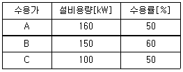
- 150[kW]
- 200[kW]
- 220[kW]
- 242[kW]
(정답률: 34%)
30. 공기차단기에 비해 SF6 가스차단기의 특징으로 볼 수 없는 것은?
- 같은 압력에서 공기의 2~3배 정도의 절연내력이 있다.
- 차단시 폭발음이 없다.
- 소전류 차단시 이상전압이 높다.
- 아크에 SF6 가스는 분해되지 않고 무독성이다.
(정답률: 49%)
31. 전력 원선도의 ㉠가로축과 ㉡세로축이 나타내는 것은?
- ㉠ 최대전력, ㉡ 피상전력
- ㉠ 유효전력, ㉡ 무효전력
- ㉠ 조상용량, ㉡ 송전손실
- ㉠ 송전효율, ㉡ 코로나손실
(정답률: 49%)
32. 전원이 양단에 있는 방사상 송전선로의 단락보호에 사용되는 계전기의 조합 방식은?
- 방향거리계전기와 과전압계전기의 조합
- 방향단락계전기와 과전류계전기의 조합
- 선택접지계전기와 과전류계전기의 조합
- 부족전류계전기와 과전압계전기의 조합
(정답률: 48%)
33. 피뢰기의 구조는?
- 특성요소와 소호리액터
- 특성요소와 콘덴서
- 소호리액터와 콘덴서
- 특성요소와 직렬 갭
(정답률: 44%)
34. 한류 리액터의 사용 목적은?
- 충전전류의 제한
- 단락전류의 제한
- 누설전류의 제한
- 접지전류의 제한
(정답률: 43%)
35. 흡출관이 필요하지 않은 수차는?
- 사류 수차
- 카플란 수차
- 프란시스 수차
- 펠톤 수차
(정답률: 34%)
36. 전력용 퓨즈를 차단기와 비교할 때 옳지 않은 것은?
- 소형, 경량이다.
- 고속도 차단을 할 수 없다.
- 큰 차단 용량을 갖는다.
- 보수가 간단하다.
(정답률: 43%)
37. 송전선로에서 코로나 임계전압이 높아지는 경우는?
- 온도가 높아지는 경우
- 상대공기밀도가 작을 경우
- 전선의 지름이 큰 경우
- 기압이 낮은 경우
(정답률: 38%)
38. 송전선로에서 매설지선의 설치 목적으로 가장 알맞은 것은?
- 코로나 전압의 감소
- 역섬락 방지
- 철탑 기초의 강도 보강
- 절연강도의 증가
(정답률: 41%)
39. 설비용량 800kW, 부등률 1.2, 수용률 60%일 때, 변전시설 용량은 최저 몇 [kVA]이상 이어야 하는가? (단, 역률은 90% 이상 유지되어야 한다고 한다.)
- 450[kVA]
- 500[kVA]
- 550[kVA]
- 600[kVA]
(정답률: 32%)
40. 원자력발전의 특징으로 적절하지 않은 것은?
- 처음에는 과잉량의 핵연료를 넣고 그 후에는 조금씩 보급하면 되므로 연료의 수송기지와 저장 시설이 크게 필요하지 않다.
- 핵연료의 허용온도와 열전달특성 등에 의해서 증발 조건이 결정되므로 비교적 저온, 저압의 증기로 운전된다.
- 핵분열 생성물에 의한 방사선 장해와 방사선 폐기물이 발생하므로 방사선측정기, 폐기물처리장치 등이 필요하다.
- 기력발전보다 발전소 건설비가 낮아 발전원가 면에서 유리하다.
(정답률: 38%)
3과목: 전기기기
41. 직류 분권 발전기의 브러시를 중성축에서 회전방향쪽으로 이동하면 전압은?
- 상승한다.
- 급격히 상승한다.
- 변화하지 않는다.
- 감소한다.
(정답률: 27%)
42. 동기 전동기를 부족여자로 운전하면 어떠한 작용을 하는가?
- 충전전류가 흐른다.
- 콘덴서 작용을 한다.
- 뒤진 전류가 흐른다.
- 뒤진 전류를 보상한다.
(정답률: 48%)
43. 100[kVA]의 단상변압기가 역률 80[%]에서 전부하 효율이 95[%]이면 역률 50[%]의 전부하에서의 효율은 약 몇 [%]인가?
- 84
- 88
- 92
- 96
(정답률: 23%)
44. 병렬운전 중인 A, B 두 동기 발전기 중 A발전기의 여자를 B발전기 보다 강하게 하면 A 발전기는?
- 부하 전류가 증가 한다.
- 90° 지상 전류가 흐른다.
- 동기화 전류가 흐른다.
- 90° 진상 전류가 흐른다.
(정답률: 35%)
45. 정격출력 20[kW], 정격전압 100[V], 정격회전속도 1500[rpm]의 직류직권발전기가 있다. 정격상태로 운전하고 있을 때 속도를 1300[rpm]으로 떨어뜨리고 전과 같은 부하전류를 흘렸을 때 단자전압은 몇 [V]가 되겠는가? (단, 전기자 저항은 0.⑤[Ω]이다.)
- 68.5
- 79
- 85.3
- 95.4
(정답률: 29%)
46. 그림과 같이 단상전파정류회로(단상중앙탭사용)에서 피크역전압(PIV)[V]은?
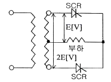
- √2E
- 2√2E
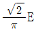
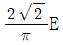
(정답률: 17%)
47. 2대의 변압기로 V결선하여 3상 변압하는 경우 변압기 이용률[%]은?
- 57.8
- 66.6
- 86.6
- 100
(정답률: 54%)
48. 단상 및 3상 유도전압 조정기에 관하여 옳게 설명한 것은?
- 단락 권선은 단상 및 3상 유도전압 조정기 모두 필요하다.
- 3상 유도전압 조정기에는 단락 권선이 필요 없다.
- 3상 유도전압 조정기의 1차와 2차 전압은 동상이다.
- 단상 유도전압 조정기의 기전력은 회전 자계에 의해서 유도 된다.
(정답률: 35%)
49. 권수비가 1:3인 변압기(이상적인 변압기)를 사용하여 교류 100[V]의 입력을 가했을 때 전파정류하면 출력전압[V]의 평균치는 얼마인가?
- 300
- 300√2
- 300√2 / π
- 600√2 / π
(정답률: 31%)
50. 교류 전압제어기를 전원과 부하회로에 연결된 조광기에 교류 실효전압을 변화시켜서 사용 할 수 있는 소자 중 가장 적합한 것은?
- 파워 트랜지스터(Power Transister)
- 트라이액(Triac)
- 모스 에프이티(MOS-FET)
- 다이오드(Diode)
(정답률: 30%)
51. 브러시 홀더(brush holder)는 브러시를 정류자면의 적당한 위치에서 스프링에 의하여 항상 일정한 압력으로 정류자 면에 접촉하여야 한다. 가장 적당한 압력은?
- 1 ~ 2 kg/cm2
- 0.5 ~ 1 kg/cm2
- 0.15 ~ 0.25 kg/cm2
- 0.01 ~ 0.15 kg/cm2
(정답률: 49%)
52. 단상유도전동기와 3상유도전동기를 비교했을 때 단상 유도전동기에 해당되는 것은?
- 역률, 효율이 좋다.
- 중량이 작아진다.
- 기동장치가 필요하다.
- 대용량이다.
(정답률: 40%)
53. 3상 유도전동기의 운전 중 전압이 80[%]로 떨어지면 부하 회전력은 몇 [%] 정도로 되는가?
- 94
- 80
- 72
- 64
(정답률: 45%)
54. 전기자 총 도체수 500, 6극, 중권의 직류전동기가 있다. 전기자 전 전류가 100[A]일 때의 발생 토크[kg⦁m]는 약 얼마인가? (단, 1극당 자속수는 0.01[Wb]이다.)
- 8.12
- 9.54
- 10.25
- 11.58
(정답률: 25%)
55. 비돌극형 동기 발전기의 단자전압(1상)을 V, 유도 기전력(1상)을 E, 동기 리액턴스(1상)를 Xs, 부하각을 δ라 하면 1상의 출력[W]은 약 얼마인가?
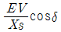
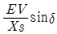
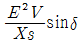
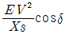
(정답률: 37%)
56. 6극, 200[V], 10[kW]의 3상 유도전동기가 960[rpm]으로 회전하고 있을 때의 회전자 기전력의 주파수는? (단, 전원의 주파수는 60[Hz]이다.)
- 12[Hz]
- 8[Hz]
- 6[Hz]
- 4[Hz]
(정답률: 32%)
57. 3상 전원에서 2상 전압을 얻고자 할 때 다음 결선 중 맞는 것은?
- 포크 결선
- 환상 결선
- Scott 결선
- 대각 결선
(정답률: 48%)
58. 유도 전동기의 고정자 철심(규소 강판)의 두께는 보통 몇 [mm]인가?
- 0.25 ~ 0.35
- 0.35 ~ 0.5
- 0.5 ~ 0.7
- 0.7 ~ 0.85
(정답률: 35%)
59. 직류기에서 양호한 정류를 얻을 수 있는 조건이 아닌 것은?
- 전기자 코일의 인덕턴스를 작게 한다.
- 정류주기를 크게 한다.
- 자속 분포를 줄이고 자기적으로 포화시킨다.
- 브러시의 접촉저항을 작게 한다.
(정답률: 48%)
60. 동기 발전기의 기전력의 파형을 정현파로 하기 위해 채용되는 방법이 아닌 것은?
- 매극매상의 슬롯수 q를 작게한다.
- 반폐 슬롯을 사용한다.
- 단절권 및 분포권으로 한다.
- 공극의 길이를 크게한다.
(정답률: 27%)
4과목: 회로이론
61. 다음 회로에서 S를 닫은 후 t = 2초 일 때 회로에 흐르는 전류는 약 몇 [A]인가?
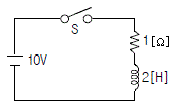
- 3.7[A]
- 4.6[A]
- 5.2[A]
- 6.3[A]
(정답률: 18%)
62. 3상 불평성 전압을 Va, Vb, Vc 라고 할 때 정산전압은? (단,
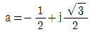
이다.)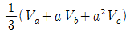
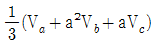
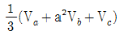
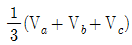
(정답률: 41%)
63. 다음의 회로가 정 저항 회로가 되기 위한 L[H]의 값은?
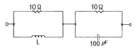
- 1[H]
- 0.1[H]
- 0.01[H]
- 0.001[H]
(정답률: 36%)
64. 3상 불평형 전압에서 영상전압이 140[V]이고, 정상전압이 600[V], 역상전압이 280[V]이면 전압의 불평형률은?
- 0.67
- 0.47
- 0.23
- 0.12
(정답률: 45%)
65. 2전력계법을 써서 대칭 평형 3상 전력을 측정하였더니 각 전력계가 500[W], 300[W]를 지시하였다면 전 전력은?
- 200[W]
- 300[W]
- 500[W]
- 800[W]
(정답률: 50%)
66. R-L 직렬회로에서 V=10+100√2 sinωt + 100√2 sin(3ωt) [V]인 전압을 가할 때 제3고조파 전류의 실효값[A]은? (단, R = 8[Ω], ωL = 2[Ω]이다.)
- 10[A]
- 5[A]
- 3[A]
- 1[A]
(정답률: 38%)
67. 다음과 같은 4단자망의 4단자 정수 중 D의 값은?
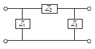
- Z2
- 1 + Z2 / Z1
- 1 + Z2 / Z3
- 1+Z2Z3
(정답률: 36%)
68. 10[kVA]의 변압기 2대로 공급할 수 있는 최대 3상 전력은 약 몇 [kVA]인가? (단, 결선은 V 결선시 이다.)
- 20[kVA]
- 17.3[kVA]
- 10[kVA]
- 8.7[kVA]
(정답률: 50%)
69. 비정현파의 전압이 3+10√2 sinωt + 5√2 sin(3ωt)[V]일 때 실효치[V]는?
- 11.5[V]
- 10.5[V]
- 9.5[V]
- 8.5[V]
(정답률: 38%)
70. 다음과 같은 회로에서 저항 2.6[Ω]에 흐르는 전류[A]는?
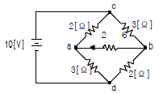
- 0.1[A]
- 0.2[A]
- 0.4[A]
- 0.8[A]
(정답률: 32%)
71. 정현파 교류전압의 파고율은?
- 0.91
- 1.11
- 1.41
- 1.73
(정답률: 43%)
72. f(t) = sint+2cost를 라플라스 변환하면?
- 2s / s2+1
- 2s+1 / (s+1)2
- 2s+1 / s2+1
- 2s / (s+1)2
(정답률: 29%)
73. Y결선의 전원에서 각 상전압이 220[V]일 때 선간 전압은?
- 127[V]
- 220[V]
- 311[V]
- 381[V]
(정답률: 49%)
74. 주기적인 구형파 신호의 구성은?
- 직류성분만으로 구성 된다.
- 기본파 성분만으로 구성 된다.
- 고조파 성분만으로 구성 된다.
- 직류 성분, 기본파 성분, 무수히 많은 고조파 성분으로 구성 된다.
(정답률: 43%)
75. 다음 ( ) 안에 들어갈 내용으로 가장 적합한 것은?
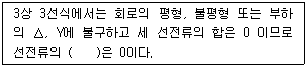
- 정상분
- 역상분
- 영상분
- 평형분
(정답률: 44%)
76. 어떤 부하에
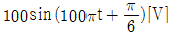
의 전압을 가했을 때 흐르는 전류가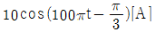
이었다면 이 부하의 소비전력은?- 250[W]
- 433[W]
- 500[W]
- 866[W]
(정답률: 28%)
77. 24[Ω] 저항에 미지의 저항 Rx를 직렬로 접속한 후 전압을 가했을 때 24[Ω] 양단의 전압이 72[V]이고 저항 Rx 양단의 전압이 45[V]이면 저항 Rx는?
- 20[Ω]
- 15[Ω]
- 10[Ω]
- 8[Ω]
(정답률: 28%)
78. 평형 3상 유도전동기의 출력이 10[HP], 선간전압 200[V], 효율 90[%], 역률 85[%]일 때, 이 전동기에 유입되는 선전류는 약 몇 [A] 인가? (단, 1[HP]=746[W]이다.)
- 40[A]
- 28[A]
- 20[A]
- 14[A]
(정답률: 34%)
79. 전압의 순시값이 3+10√2sinωt[V]일 때 실효값은?
- 10.4[V]
- 11.6[V]
- 12.5[V]
- 16.2[V]
(정답률: 32%)
80.
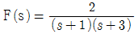
의 역라플라스 변환은?- e-t - e-3t
- e-t - e3t
- et - e3t
- et - e-3t
(정답률: 49%)
5과목: 전기설비
81. 사용전압이 35kV 이하인 특고압 가공전선과 가공 약전류전선 등을 동일 지지물에 시설하는 경우, 특고압 가공전선로는 어떤 종류의 보안공사로 하여야 하는가?
- 제1종 특고압 보안공사
- 제2종 특고압 보안공사
- 제3종 특고압 보안공사
- 고압보안공사
(정답률: 26%)
82. 수소 냉각식의 발전기에서 발전기안의 수소의 순도가 얼마 이하로 되면 경보하는 장치를 시설해야 하는가?
- 70[%]
- 85[%]
- 90[%]
- 95[%]
(정답률: 49%)
83. 철탑의 강도계산에 사용하는 이상시 상정하중에 대한 철탑의 기초에 대한 안전율은 얼마 이상이어야 하는가?
- 0.9
- 1.33
- 1.83
- 2.25
(정답률: 43%)
84. 발전소에서 시설하는 계측 장치 중 주요 변압기의 계측 장치로 알맞은 것은?
- 전압 및 전류 또는 전력
- 전압 및 유온 또는 주파수
- 전압 및 전류 또는 전력품질
- 전압 및 전류 또는 온도
(정답률: 48%)
85. 석유류를 저장하는 장소의 저압 옥내 전기설비에 사용할 수 없는 배선 공사방법은?
- 합성수지관공사
- 케이블공사
- 금속관공사
- 애자사용공사
(정답률: 44%)
86. 가공전선로의 지지물에 시설하는 지선의 시방세목을 설명한 것 중 옳은 것은?
- 안전율은 1.2 이상일 것
- 허용 인장하중의 최저는 5.26kN 으로 할 것
- 소선은 지름 1.6mm 이상인 금속선을 사용할 것
- 지선에 연선을 사용할 경우 소선 3가닥 이상의 연선일 것
(정답률: 48%)
87. 전선의 단면적이 38[mm2]인 경동연선을 사용하고 지지물로는 B종 철주 또는 B종 철근 콘크리트주를 사용하는 특고압 가공 전선로를 제3종 특고압 보안공사에 의하여 시설하는 경우의 경간은 몇 [m] 이하이어야 하는가?
- 100m
- 150m
- 200m
- 250m
(정답률: 26%)
88. 최대사용전압이 6600V인 3상 유도전동기의 권선과 대지 사이의 절연내력 시험전압은?
- 7260[V]
- 7920[V]
- 8250[V]
- 9900[V]
(정답률: 43%)
89. 저압 가공전선 상호간을 접근 또는 교차하여 시설하는 경우 전선 상호간 이격거리 및 하나의 저압 가공전선과 다른 저압 가공전선로의 지지물사이의 이격거리는 각각 몇 [cm] 이상이어야 하는가? (단, 어느 한 쪽의 전선이 고압 절연전선, 특고압절연전선 또는 케이블이 아닌 경우이다.)
- 전선 상호간 : 30cm, 전선과 지지물간 : 30cm
- 전선 상호간 : 30cm, 전선과 지지물간 : 60cm
- 전선 상호간 : 60cm, 전선과 지지물간 : 30cm
- 전선 상호간 : 60cm, 전선과 지지물간 : 60cm
(정답률: 32%)
90. 애자사용공사에 의한 고압 옥내배선 등의 시설에서 사용되는 연동선의 공칭단면적은 몇 mm2 이상인가?
- 6.0
- 10
- 16
- 25
(정답률: 36%)
91. 빙설의 정도에 따라 풍압하중을 적용하도록 규정하고 있는 내용 중 옳은 것은?
- 빙설이 많은 지방에서는 고온계절에는 갑종 풍압하중, 저온계절에는 을종 풍압하중을 적용한다.
- 빙설이 많은 지방에서는 고온계절에는 을종 풍압하중, 저온계절에는 갑종 풍압하중을 적용한다.
- 빙설이 적은 지방에서는 고온계절에는 갑종 풍압하중, 저온계절에는 을종 풍압하중을 적용한다.
- 빙설이 적은 지방에서는 고온계절에는 을종 풍압하중, 저온계절에는 갑종 풍압하중을 적용한다.
(정답률: 34%)
92. 나전선의 사용제한에 관한 사항으로 옥내에 시설하는 저압전선으로 나전선을 사용할 수 없는 경우는?
- 금속 덕트 공사에 의하여 시설하는 경우
- 버스 덕트 공사에 의하여 시설하는 경우
- 애자 사용 공사에 의하여 전개된 곳에 전기로용 전선을 시설하는 경우
- 라이팅 덕트 공사에 의하여 시설하는 경우
(정답률: 25%)
93. 고압 가공전선과 저압 가공전선을 동일 지지물에 시설하는 경우 고압 가공전선에 케이블을 사용하면 그 케이블과 저압 가공전선의 이격거리는 최소 몇 [cm] 이상으로 할 수 있는가?
- 30cm
- 50cm
- 75cm
- 100cm
(정답률: 29%)
94. 전력 보안 가공통신선이 철도의 궤도를 횡단하는 경우에는 레일면상 몇 [m] 이상에 시설하여야 하는가?
- 5.0m
- 5.5m
- 6.0m
- 6.5m
(정답률: 46%)
95. 사용전압이 400V를 넘는 저압 옥내배선을 애자사용공사에 의하여 시설하는 경우 전선의 지지점간의 거리는 몇 [m] 이하이어야 하는가? (단, 전선을 조영재의 위면 또는 옆면에 따라 붙이지 않은 경우이다.)
- 2.0m
- 4.0m
- 4.5m
- 6.0m
(정답률: 20%)
96. 금속제 수도관로를 접지공사의 접지극으로 사용하는 경우에 대한 사항이다. ( ① ), ( ② ), ( ③ )에 들어갈 수치로 알맞은 것은?
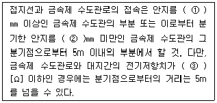
- ① 75, ② 75, ③ 2
- ① 75, ② 50, ③ 2
- ① 50, ② 75, ③ 4
- ① 50, ② 50, ③ 4
(정답률: 37%)
97. 특고압 가공전선이 저고압 가공전선과 제1차 접근상태로 시설하는 경우, 66kV 특고압 가공전선과 저고압 가공전선 사이의 이격거리는 몇 [m] 이상이어야 하는가?
- 2.0m
- 2.12m
- 2.2m
- 2.5m
(정답률: 24%)
98. 특고압을 직접 저압으로 변성하는 변압기의 시설기준으로 적합하지 않은 것은?
- 전기로 등 전류가 큰 전기를 소비하기 위한 변압기
- 광산에서 물을 양수하기 위한 양수기용 변압기
- 발전소⦁변전소⦁개폐소 또는 이에 준하는 곳의 소내용 변압기
- 교류식 전기철도용 신호회로에 전기를 공급하기 위한 변압기
(정답률: 51%)
99. 사용전압이 22.9kV인 가공전선이 삭도와 제1차 접근상태로 시설되는 경우, 가공전선과 삭도 또는 삭도용 지주 사이의 이격거리는 최소 몇 [m] 이상으로 하여야 하는가? (단, 전선으로는 특고압 절연전선을 사용한다고 한다.)
- 0.5m
- 1m
- 2m
- 2.12m
(정답률: 27%)
100. 6600V, 3상 3선식 고압가공 전선로의 전선에 고압 절연전선을 사용한 전선연장이 180km로 되어 있다. 접지저항 값은 몇 [Ω] 이하로 하여야 하는가? (단, 이 전로에는 고저압 혼촉시에 2초 이내에 자동차단 하는 장치가 없다.)
- 25
- 40
- 50
- 75
(정답률: 31%)